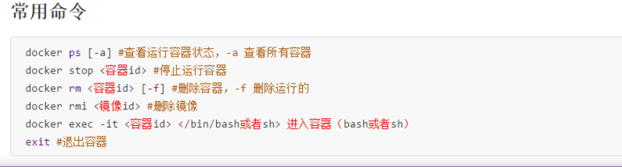
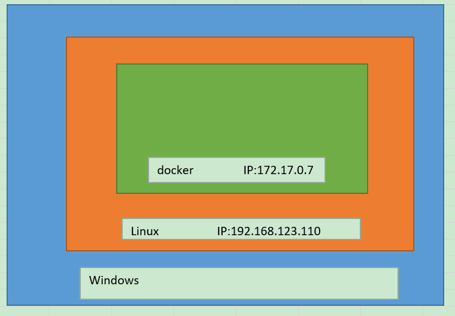

1. Docker
建立容易迁移环境
2. Docker官网
3. docker.app之preferences全解：
https://blog.csdn.net/w275840140/article/details/80158972
4. window7的docker
4.1. 快速启动docker
- Step1: 打开cmd
- Step2: 拖拽C:\Program Files\Docker Toolbox\start.sh到cmd里，点击enter执行。
5. window的docker配置加速器
在Docker的配置“Demon”中，在“Registry mirrors”下添加：
https://registry.docker-cn.com
备注：
1）Docker 官方中国区 https://registry.docker-cn.com
2）网易 http://hub-mirror.c.163.com
3）ustc https://docker.mirrors.ustc.edu.cn
参考：
https://blog.csdn.net/slibra_L/article/details/77505003
window docker的加速镜像设置：
https://segmentfault.com/a/1190000016083023?utm_source=tag-newest
参考：
https://segmentfault.com/a/1190000016083023?utm_source=tag-newest
6. 查看镜像
Docker ps -a
7. 启动镜像
docker start 镜像id
参考：
https://www.cnblogs.com/asxf/p/11057638.html
8. 阿里云镜像加速
参考：
控制台
https://cr.console.aliyun.com/cn-hangzhou/instances/mirrors
教程
https://blog.csdn.net/my__holiday/article/details/79111397
9. docker安装的系统
linux
10. docker-compose用法
11. Docker 运行时资源限制-内存memory、交换机分区Swap、CPU
12. docker常用命令

13. 镜像随docker容器启动而自动启动
--restart=unless-stopped
或
restart=always
方法一：
docker run -d --restart=unless-stopped -p 3306:3306 hub.c.163.com/library/mysql:5.7.18
在-d 后添加--restart=unless-stopped下次docker启动后，mysql就会自动启动
方法二：
docker container update --restart=always a7328ec41e91
方法三：
docker run --name docker-gitlab-master_gitlab_1 -d --restart=always /bin/bash
方法四：
docker exec -it docker-gitlab-master_gitlab_1 -d --restart=always /bin/bash
参考：
https://blog.csdn.net/qq_38522268/article/details/83894903
https://www.cnblogs.com/kaishirenshi/p/10396446.html
14. docker的ip：
https://jingyan.baidu.com/article/95c9d20d61bc1dec4f756156.html
介绍
1、Docker CLI 客户端，用来运行docker引擎创建镜像和容器 2、Docker Machine. 可以让你在windows的命令行中运行docker引擎命令 3、Docker Compose. 用来运行docker-compose命令 4、Kitematic. 这是Docker的GUI版本 5、Docker QuickStart shell. 这是一个已经配置好Docker的命令行环境 6、Oracle VM Virtualbox. 虚拟机
仓库相关操作 docker pull #从远程仓库拉取镜像到本地 docker push #推送本地镜像到远程仓库 docker search #在仓库搜索镜像 docker login #登录到官方仓库Docker Hub docker logout #退出登录 12345 镜像相关操作 docker build #从Dockerfile构建镜像 docker pull #同上 docker push #同上 docker history #显示镜像的历史信息 docker images #列出镜像 docker rmi #删除镜像 docker tag #给镜像打上tag标签 docker run #创建容器并启动容器 docker create #创建容器 docker commit #将修改后的容器生成镜像 docker load #从压缩包中加载镜像 docker import #从归档文件中创建镜像 docker save #将镜像保存到压缩文件 12345678910111213 容器相关操作 docker attach #依附到一个正在运行的容器中 docker exec #进到正在运行的容器中执行命令 docker cp #在容器和本地系统间复制文件 docker update #将一个容器内所有的进程从暂停状态中恢复 docker ps #列出主机中的容器 docker port #查找一个nat到私有网口的公共口 docker top #查看一个容器中正在运行的进程信息 docker logs #查看日志文件 docker diff #检查容器内文件系统的修改 docker status #输出容器的资源使用统计信息 docker wait #阻塞直到容器终止 docker start #启动已创建的容器 docker pause #暂停运行中的容器 docker unpause #使暂停的容器恢复运行 docker stop #停止容器运行 docker rename #容器改名 docker restart #容器重启 docker kill #关闭运行中的容器 docker rm #删除容器 docker export #导出容器内容为tar包 docker run #同上 docker create #同上 docker commit #同上 1234567891011121314151617181920212223 其他基本命令 docker events #从服务端获取实时的事件 docker info #查看系统相关信息 docker inspect #显示Docker对象的具体配置信息，包括容器，镜像，网络等 docker version #输出Docker的版本信息 1234 管理命令 docker container #容器管理 docker image #镜像管理 docker network #网络管理 docker node #节点管理 docker plugin #插件管理 docker secret #管理敏感数据及普通服务配置项 docker service #服务管理 docker stack #栈管理 docker swarm #集群管理 docker system #管理系统信息 docker volume #卷管理
参考： https://blog.csdn.net/xhyxxx/article/details/75447962
15. docker 设置代理vpn
https://www.cnblogs.com/jacquin/p/9604576.html
16. ssh连接docker container
https://www.cnblogs.com/linguoguo/p/10248074.html
真实原理： 在Windows上搭建docker服务器需要在Windows模拟一个Linux平台，然后在Linux平台上搭建的docker服务器，所以在使用ssh工具连接docker容器的时候，使用的ip地址不是docker容器的地址，也不能使用localhost、127.0.0.1，需要使用 docker-mechine IP default命令获取到虚拟Linux的IP地址，通过这个地址使用 ssh -p xxx root@192.168.100.0（此地址是通过命令获取到的IP），然后才能登录。使用xshell登录docker容器后，利用xftp连接进行文件的传送
图解：  参考： https://www.cnblogs.com/lanrumeng/p/9764013.html https://www.cnblogs.com/qingyunzong/p/9021140.html
docker exec -it a7328ec41e91 update-permissions
17. 大杀器docker-compose的特殊命令：
build 构建或重建服务 help 命令帮助 kill 杀掉容器 logs 显示容器的输出内容 port 打印绑定的开放端口 ps 显示容器 pull 拉取服务镜像 restart 重启服务 rm 删除停止的容器 run 运行一个一次性命令 scale 设置服务的容器数目 start 开启服务 stop 停止服务 up 创建并启动容器
参考： https://www.cnblogs.com/williamjie/p/9103327.html
18. window的docker连接ssh
安装openssh-server https://www.v2ex.com/t/468079 安装ubuntu镜像，实现bash命令 https://blog.51cto.com/6226001001/1953310 https://www.cnblogs.com/xingyunfashi/p/8857093.html
19. docker run
创建一个新的容器并运行一个命令